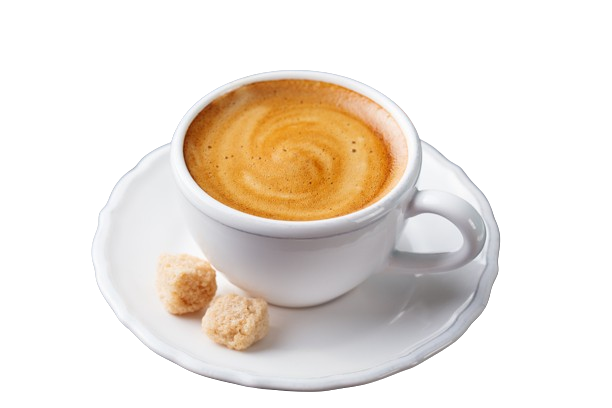

An espresso shot can be served solo or used as the foundation of most coffee drinks, like lattes and macchiatos. If you're an at-home barista, this Breville Bambino and espresso accessories will turn your house into your own coffee shop. Figure out how an espresso is different from coffee. Always on the go? This portable espresso maker lets you brew your coffee without needing a power source, so you can take it with you wherever you need it!
ESPRESSO
An espresso shot can be served solo or used as the foundation of most coffee drinks, like lattes and macchiatos. If you're an at-home barista, this Breville Bambino and espresso accessories will turn your house into your own coffee shop. Figure out how an espresso is different from coffee. Always on the go? This portable espresso maker lets you brew your coffee without needing a power source, so you can take it with you wherever you need it!